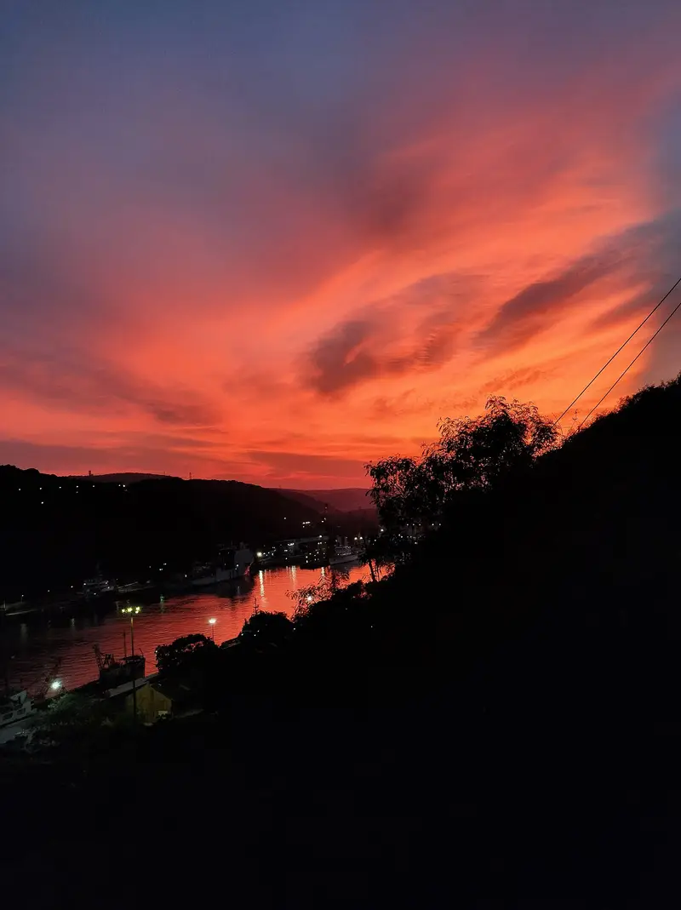
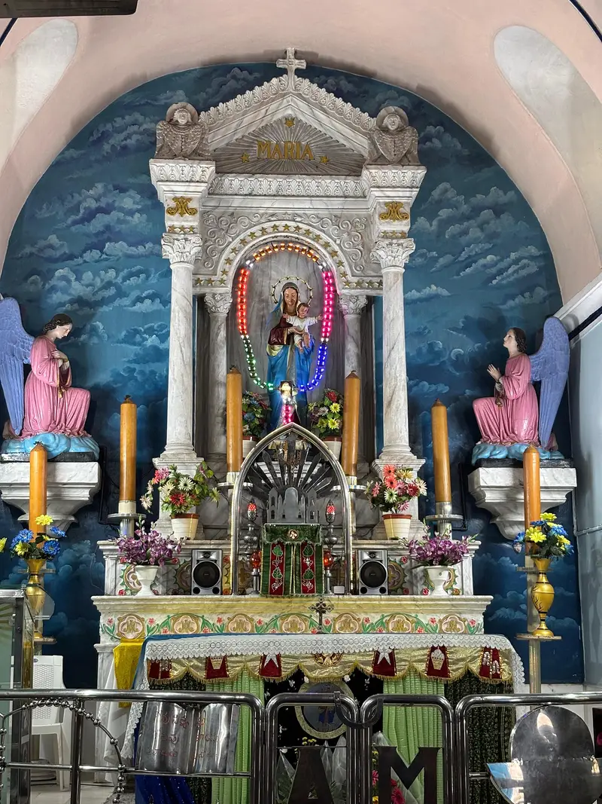

Day 1 · Stop 02 · Hilltop chapel
🕒 Day 1 · 11:30 AM – 1:00 PM
Ross Hill Church
Mother Mary shrine on Ross Hill (Kanyamarykonda)
A white hilltop chapel above the harbour, one of Vizag's three hills of harmony.
- A chapel since 1867
- The middle of the 'three hills'
- Harbour views from the top



About Ross Hill Church
Ross Hill is the middle and highest of three small hills beside the channel into Visakhapatnam's inner harbour. It takes its name from Monsieur Ross, who built a house on the hilltop in 1864.
Bishop J. M. Tissot acquired the bungalow in 1866, and on 15 August 1867 an altar was blessed there, turning it into a chapel dedicated to Mother Mary. Locals also call the hill Kanyamarykonda.
The neighbouring hills hold a Sri Venkateswara temple and the Baba Ishaq Madina dargah, so the three are often seen as a symbol of the city's religious harmony. Every 8 December a procession climbs the hill for the Feast of the Immaculate Conception.
What we'll see
- The castle-like white facade with blue windows
- Panoramic views over the port and the harbour channel
- Three hills, three faiths, side by side
- Sunsets over the harbour
Photo gallery


Crew plan · Day 1 · Stop 2 of 8
11:30 AM – 1:00 PM
A short climb after Simhachalam: harbour views and a group photo against the white facade.
Open in Google MapsTips
- The way up is a steep flight of steps: wear comfortable shoes.
- It's an active place of worship, so keep it quiet inside.
- Late afternoon gives the best light for harbour photos.